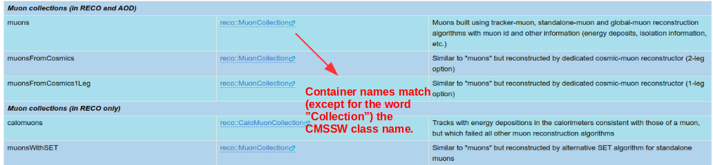
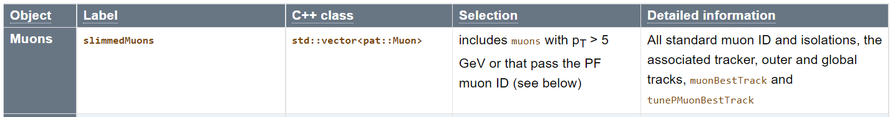
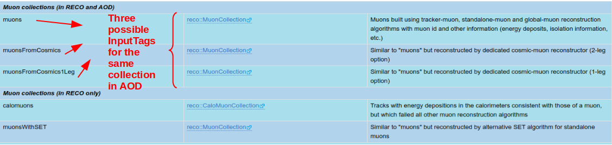

Physics Objects¶
Description¶
The CMS is a giant detector that acts like a camera that "photographs" particle collisions, allowing us to interpret their nature.
Certainly we cannot directly observe all the particles created in the collisions because some of them decay very quickly or simply do not interact with our detector. However, we can infer their presence. If they decay to other stable particles and interact with the apparatus, they leave signals in the CMS subdetectors. These signals are used to reconstruct the decay products or infer their presence; we call these physics objects. These objects could be electrons, muons, jets, missing energy, etc., but also lower level objects like tracks. For the current releases of open data, we store them in ROOT files following the EDM data model in AOD format.
In the CERN Open Portal site one can find a description of these physical objects and a list of them corresponding to 2010 and 2011/2012 releases of open data. For Run 1 data, this guide has the most uptodate content with the corresponding code snippets. For Run 2 data from 2015, a detailed listing is available in the CMS WorkBook.
The code examples to which this guide mainly refers to are:
- Physics Objects Extractor Tool (POET): shows how to extract physics (objects) information and gives examples of methods or tools needed for processing them. For the sake of clarity, EDAnalyzer modules are provided separately for each object.
- AOD2NanoAODOutreachTool: reads events from CMS AOD files and convert them to a reduced data format. This example provides a single EdAnalyzer module handling all types of physics objects.
- Physics Objects Extractor Tool (POET): shows how to extract physics (objects) information and gives examples of methods or tools needed for processing them. For the sake of clarity, EDAnalyzer modules are provided separately for each object.
DataFormats¶
The physical objects are usually stored in specific collections. For instance, muons are most commonly obtained from the reco::Muon collection. The AOD Data Format Table gives a good description of the different collections (or data formats) for the AOD tier. Unfortunately, the links for the containers column got broken after CMSSW was moved to Github. Those links would have pointed us to the corresponding CMSSW C++ classes associated with those containers. This is important because one needs to know which CMSSW class matches a given collection of objects to include the headers of those classes in the header of your analyzer code. But let that not let us down.

Fortunately, the names of the collections containers actually match the name of its associated CMSSW classes. These classes (data format classes) live under the DataFormats directory in CMSSW. If we browse through, we find the MuonReco package. In its interface area we find the DataFormats/MuonReco/interface/Muon.h class header, which is the one we would need to incorporate in our analyzer. This is corroborated by this Muon Analysis Twiki section.
Remember
When accessing a specific piece of code in the CMSSW github repository, and want to explore its methods, variables, etc., make sure you select the right git branch. E.g., CMSSW_5_3_X for 2011/2012 open data.
In addition to this base class, sometimes it is necessary to invoke other auxiliary classes. For instance, DataFormats/MuonReco/interface/MuonFwd.h, which can be found in the same interface area.
So, in the context of this example, in order to support muons information, at the top of your EDAnalyzer you should include the following lines:
//classes to extract Muon information
#include "DataFormats/MuonReco/interface/Muon.h"
#include "DataFormats/MuonReco/interface/MuonFwd.h"
See an example of an EDAnalyzer accessing muon information in the MuonAnalyzer of the Physics Object Extractor Tool (POET).
The physical objects are usually stored in specific collections. For instance, muons are obtained from the C++ class std::vector<pat::Muon> where pat stands for "Physics analysis tools" and is a namespace for miniAOD object classes. The collection is often called pat::MuonCollection using its definition in the muon class). The MINIAOD physics objects table gives a good description of the different collections (or data formats) for the MINIAOD tier. This is the muon entry in that table:

The MINIAOD data format classes live under the DataFormats/PatCandidates/interface directory in CMSSW. Here we find the DataFormats/PatCandidates/interface/Muon.h class header, which is the one we would need to incorporate in our analyzer. The other possible collection
So, in the context of this example, in order to support muons information, at the top of your EDAnalyzer you should include the following line:
//classes to extract Muon information
#include "DataFormats/MuonReco/interface/Muon.h"
See an example of an EDAnalyzer accessing muon information in the MuonAnalyzer of the Physics Object Extractor Tool (POET). The definitions of object classes used in miniAOD data format can be found in the list of all classes of the pat namespace.
Access methods¶
In the Event methods for data access section of the Getting Data From an Event Twiki page, one can find a complete description of the different methods available for Event data access.
Remember
When accessing the CMS twiki pages we will usually point you to the most recent page. However, historical Twiki documentation, i.e., earlier revision of the pages, may provide more accurate information for open data that is already a few years old. One can access this historical archive by going to the bottom of any Twiki page, clicking on History and exploring the revisions closer to the open data release year.
As indicated in that page, all Event data access methods use the edm::Handle<T>, where T is the C++ type of the requested object, to hold the result of an access. As an example, during Run 1, the recommended method was the getByLabel one. This method needed an InputTag. This can also be extracted from the AOD Data Format Table. The first column indicate the InputTag:

Therefore, when accessing muon information, in the analyze method of the EDAnalyzer would include the following lines:
Handle<reco::MuonCollection> mymuons;
iEvent.getByLabel("muons", mymuons);
If you required cosmic muons, you would need instead:
Handle<reco::MuonCollection> mymuons;
iEvent.getByLabel("muonsFromCosmics", mymuons);
Alternatively, as done in the POET MuonAnalyzer, it is also possible to retrieve the InputTag name from configuration. In that case, the configuration file has:
process.demo = cms.EDAnalyzer('MuonAnalyzer',
InputCollection = cms.InputTag("muons")
)
In this case, the appropriate input tag needs to be defined in the EDAnalyzer class as done in the MuonAnalyzer example class:
//declare the input tag for MuonCollection
edm::InputTag muonInput;
It is extracted from the ParameterSet in the constructor
MuonAnalyzer::MuonAnalyzer(const edm::ParameterSet& iConfig)
{
//now do what ever initialization is needed
muonInput = iConfig.getParameter<edm::InputTag>("InputCollection");
}
and used in the analyze method:
Handle<reco::MuonCollection> mymuons;
iEvent.getByLabel(muonInput, mymuons);
As indicated in that page, all Event data access methods use the edm::Handle<T>, where T is the C++ type of the requested object, to hold the result of an access. For Run 2 data, the method is getByToken. This method needs a "token" and an InputTag, which will pass the name of the collection to the analyzed. This name is indicated as "Label" the MINIAOD table, slimmedMuons for muons.
The InputTag name is defined in the configuration. In that case, the configuration file has:
process.mymuons = cms.EDAnalyzer('MuonAnalyzer',
muons = cms.InputTag("slimmedMuons")
)
The appropriate token in the EDAnalyzer class as done in the MuonAnalyzer example class:
//declare the token for MuonCollection
edm::EDGetTokenT<pat::MuonCollection> muonToken_;
which is then passed with the Input Tag to the constructor of the EDAnalyzer class
MuonAnalyzer::MuonAnalyzer(const edm::ParameterSet& iConfig):
muonToken_(consumes<pat::MuonCollection>(iConfig.getParameter<edm::InputTag>("muons")))
{
//now do what ever initialization is needed
and used in the analyze method:
Handle<pat::MuonCollection> muons;
iEvent.getByToken(muonToken_, muons);
Detector information for identification¶
The most signicant difference between a list of certain particles from a Monte Carlo generator and a list of the corresponding physics objects from CMS is likely the inherent uncertainty in the reconstruction. Selection of “a muon” or “an electron” for analysis requires algorithms designed to separate “real” objects from “fakes”. These are called identification algorithms, often abbreviated as ID.
Isolation algorithms are designed to measure the amount of energy deposited near the object, to determine if it was likely produced near the primary interaction (typically little nearby energy), or from the decay of a longer-lived particle (typically a lot of nearby energy). Many types of isolation algorithms exist to deal with unique physics cases.
Isolation is computed in similar ways for all physics objects: search for particles in a cone around the object of interest and sum up their energies, subtracting off the energy deposited by pileup particles. This sum divided by the object of interest’s transverse momentum is called relative isolation and is the most common way to determine whether an object was produced “promptly” in or following the proton-proton collision (ex: electrons from a Z boson decay, or photons from a Higgs boson decay). Relative isolation values will tend to be large for particles that emerged from weak decays of hadrons within jets, or other similar “nonprompt” processes.
Both types of algorithms function using working points that are described on a spectrum from “loose” to “tight”. Working points that are “looser” tend to have a high efficiency for accepting real objects, but perhaps a poor rejection rate for fake objects. Working points that are “tighter” tend to have lower efficiencies for accepting real objects, but much better rejection rates for fake objects. The choice of working point is highly analysis dependent. Some analyses value efficiency over background rejection, and some analyses are the opposite.
The standard identification and isolation algorithm results can be accessed from the physics object classes.
Additional information¶
The next pages in this guide provide further details on how to access and identify CMS physics objects.
In addition, in Chapter 7 of the CMS Workbook one can find Analysis pages that provide additional information, which can be useful to check on top of the general strategy for accessing objects that was discussed above.